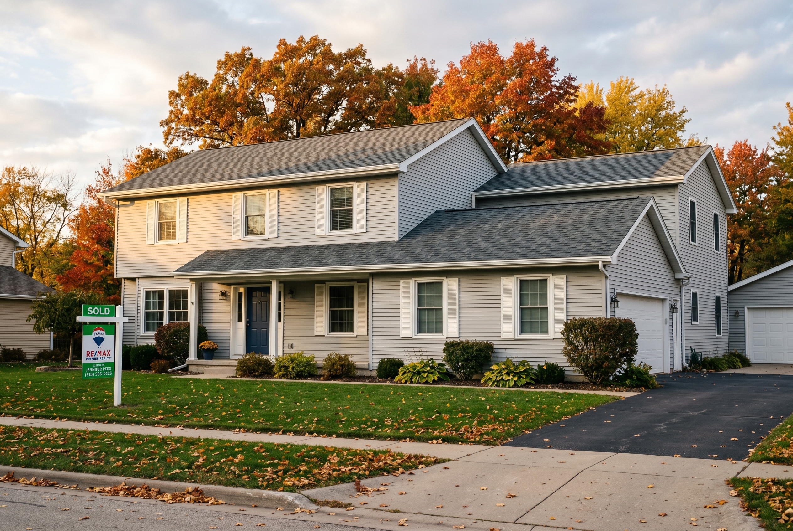

Published November 16, 2026 • By Black Ridge Contracting
One of the questions we get every fall, especially from homeowners thinking about year end projects, is some version of "can I deduct this on my taxes?" The honest answer is usually no, not in the year you do the work, but yes in a different way that can save you real money later. Here's a contractor's plain English read on how Iowa home improvements actually interact with your taxes.
This is not tax advice. Talk to a CPA. But understanding the basic framework will help you ask better questions and keep better records.
The Distinction That Matters: Improvement vs Repair
The IRS draws a line between two categories of work on your home.
Capital improvements add to the value of your home, prolong its useful life, or adapt it to new uses. Examples: a new roof, kitchen remodel, room addition, finished basement, new HVAC system, new siding, foundation work.
Repairs and maintenance keep the home in working order without materially adding value or extending life. Examples: patching a leak, repainting a wall, replacing a few cracked roof tiles, fixing a broken window pane.
The distinction matters because capital improvements add to your home's cost basis. Repairs do not.
Why Cost Basis Matters
Your home's cost basis is what you paid for it plus the cumulative value of capital improvements. When you sell, your taxable capital gain is calculated as sale price minus cost basis.
For most primary residences, the first $250,000 of capital gain ($500,000 for married couples) is excluded from federal tax. So for homeowners selling within that range, cost basis tracking may not save you direct tax. But for higher value homes, multi decade owners, or anyone in a rapidly appreciating market, every dollar of documented capital improvement can save you real tax at sale time.
An Iowa homeowner who bought in 2005 for $180,000, put $60,000 of documented improvements over 20 years, and sells in 2026 for $400,000 has a taxable gain of $160,000 instead of $220,000. The improvements meaningfully reduced the calculation.
What to Keep, How Long
For every capital improvement, save:
- Signed contract with the contractor
- All invoices, paid and itemized
- Receipts for any materials you paid for directly
- Before and after photos with timestamps
- Any permits pulled for the work
- Inspection reports if applicable
Store these in a dedicated file for your home. Keep them indefinitely while you own the home, plus three years after sale at minimum. Six years after sale is safer because audits can reach back further.
Digital storage is fine. Take photos of paper receipts and store them in a cloud folder. Just make sure they're organized by year and clearly labeled.
Energy Credits You Can Actually Use Now
The Energy Efficient Home Improvement Credit and the Residential Clean Energy Credit are federal credits you can claim in the year you complete the work. These are different from cost basis adjustments because they reduce your tax bill that same year.
The big categories that qualify in 2026:
- Heat pump and heat pump water heater installation. Up to $2,000 credit.
- Insulation and air sealing. 30 percent of cost up to $1,200 annually.
- Energy efficient exterior doors. Up to $250 per door, $500 annual cap.
- Energy efficient windows and skylights. Up to $600 annual cap.
- Solar panel and battery installation. 30 percent of cost, no cap.
Credits change annually. Verify current rules with your tax professional before relying on them for project planning.
Rental Property Is a Different Conversation
If you own rental property in Iowa, the rules are entirely different. Capital improvements to rentals are depreciated over multiple years (27.5 years for residential rental property). Repairs are deductible in the year completed. There are also rules around what qualifies as a repair versus an improvement that the IRS scrutinizes for rental property.
If you're a landlord, get a tax professional involved in any major renovation decision before you start the work. The wrong category can cost you thousands in tax efficiency.

Selling As-Is Without a Renovation
If the renovation math doesn't work and you're thinking about selling the house instead, the tax implications of an as-is sale can sometimes be simpler. No basis tracking, no cost recovery, no contractor receipts. Just one sale price.
Investors who buy as-is, like our wholesaling team at Heberer Homes, will give you a cash offer the same day, close in 14 to 30 days, no renovation required. Sometimes the simplest path is the right one for your situation.
The Short Version
Most Iowa home improvements are not deductible the year you do them. They are basis additions that reduce capital gain when you sell. Energy efficient improvements get federal credits in the year completed. Keep records for everything. Talk to a CPA.
If you have a renovation in mind and want a contractor walkthrough, see our remodeling services or call (515) 219-4654. We'll give you the project receipts and documentation you'll want for your tax records.
Frequently Asked Questions
Most home improvements on a primary residence are not directly deductible. They add to cost basis, reducing capital gains tax at sale. Energy efficient improvements may qualify for federal credits.
Improvements that add value, prolong useful life, or adapt to new uses. Additions, remodels, new roof, siding, windows, HVAC, finished basement, foundation work.
Signed contract, all invoices, material receipts, before and after photos, permits. Store indefinitely while you own the home plus three to six years after sale.
Yes. Energy Efficient Home Improvement Credit up to $3,200 annually. Residential Clean Energy Credit 30 percent for solar and batteries. Verify current rules with a CPA.